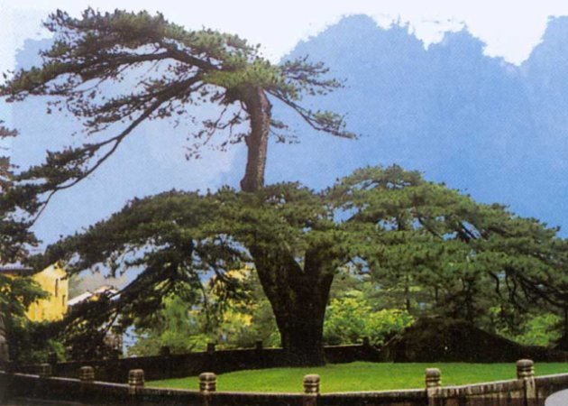
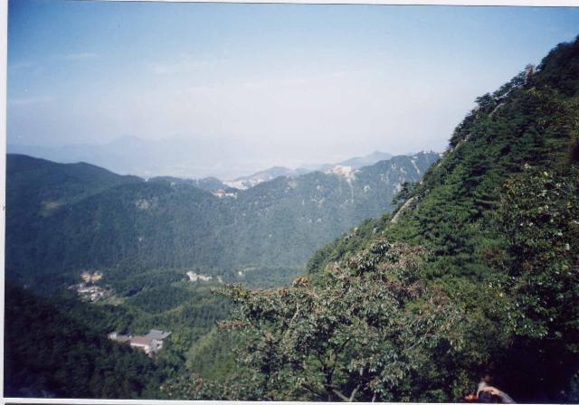
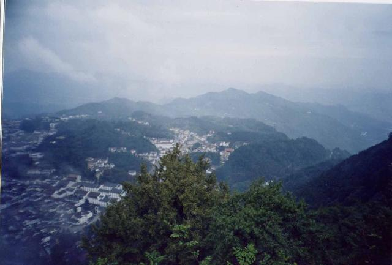
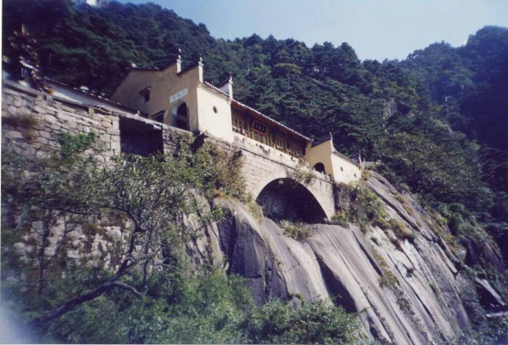

记得上个学期去了趟南京，和室友一起感觉到了这个城市的繁华与活力。相比于南京，我倒不怎么喜欢上海。理由也很简单－－它太大了，不管是城市的规模还是城市的建筑风格，大得可怕……所以有了‘游山玩水’的想法－－城市总是那么让人乏闷。
到九华山旅游是在四川时萌生的想法。当时参加的一个旅游团中有些上海人，我们跟他们聊得很好，他们说了很多关于九华山旅游的事情，蛮有吸引力的。所以当时我就有了一个想法，十一到九华山去。本来以为只有一个同寝室的跟我一起，没想到我们寝室四个人太团结了，最后还是一起去，还加上了寝室同学的一个好友。他跟我们一个学校的。
到了九华山还得买票，淡季 60RMB，旺季 90。我们是学生，收了70。情况是这样的，买了票后可以在山上呆N多时间，只要不下山（如果你 Money 多的话）。但附送的一张乘车票只能用三天，当然在这三天内是随便坐的了。
我们到九华山的那天下雨，而且十一这边气温骤降，不少于十度。我们仅有的几件薄衣物勉勉强强够用。卖票处推销住处的好多，因为门票只能用来进一次山门，如果在山上找不到住处，晚上下来，就进不去了。寝室中有一个已经到过九华山，知道上边的情况，自然不会上当。迫不及待地买了票，坐上了温暖的大吧。
上山要差不多半个小时，道路弯弯曲曲，极陡。看着两辆同样的大吧在这种小路上相对而开，真是佩服开车的司机。大吧时而悬空，时而隐没于茂盛稠密的山林中。雨有点大了，车外雾气朦朦，在悬空的地方，只看到一片白气。不时地有金黄色的寺庙掠过车窗。好一会儿，往下看时，才发现我们已经离开山脚好长一段距离了……
到了山上，下了车，没走几步，鞋就湿透了。本来想去找一个农家住处，但是天气太差，而且说来过九华山的那个室友记忆已经模糊，茫茫的雨中分不清方向……还好遇上了一个本地人，把我们领到了一个经营住处的农家。看到我们冷得发抖，主人也许心生怜悯，每个人每晚只收 20RMB，比山下说 60RMB 的便宜了两倍，而且是在十一这种旅游节假日，住在山上。不过住处原本是她小孩的房间，四人床，有一张床得挤两个人。
出于诚意，我们吃饭等等就以她家开的饭馆为根据地。她也好心，让她小孩带我们逛九华山，上街买东西。这时才发现，原来九华山上还有个镇，就建在九华山中这块巨大的平地上……
下车就差不多中午了，吃完了午饭，决定先去买点抗寒的衣物，避免以后更加狼籍。那个小孩子带着我们在镇里面东逛逛、西逛逛，看缺什么就去买……不知谁说起要去看看九华山著名的月（念“肉”）身宝殿，结果大家都很赞同，就这样，不知不觉中开始了九华“征程”。
年轻人就是年轻人，来时背着的东西还没有放下来，刚刚买到手的东西还没有放下去，就开始上山了。这时雨刚刚停，但天还很昏暗，偶尔的一阵风把树叶刮得呼呼作响，溅下的雨水会让我们以为是不是真的下雨了。伞一时打开一时放下，真雨假雨搞得寝室里的一个兄弟心头不宁，他被折腾得甚是搞笑。九曲十八弯，千回万转，这路就没有尽头。不过这一路上遇到的寺庙也真不少。差不多是刚过了这一家“后门”，就看到下一家的“前门”了，我们是自助旅游，“一个都不能放过”。
雨虽然停了，寒气还没散。随着脚下的路越走越高，才慢慢感觉到周围的那一片白茫茫。一路上也许天气原因，行人稀少，即便如此，我们也不知错过了多少次差点落入镜框的蒙胧的美。雾气浓时，远处的农家宛如在画中，端起相机，那种蒙胧几乎消失了，来得快去得也快，太难捕捉了。记得只拍到一个坐落在山顶上的寺庙，照片中只有那么一点金黄。
小寺庙不断，路是转了又转，似乎走了几个山头了，才到了月身宝殿。宝殿坐落在山顶吧，里面人头攒东，烧香拜佛的太多了。外边的情况刚好相反，那雾气似雨似风，刮得我们直喊冷。那风夹着冰点似的小雨滴，呼啸着穿越庙宇下的高檐。因为同学要算签，我又不想跟他们去，只好躲在背风的屋檐下，看着远处的白茫茫……
“南朝四百八十寺，多少楼台烟雨中”，眼前的景象有如诗中所描绘一般。我们走走停停，也不知道晃了多久，终于来到了前山的最高处，东崖禅寺。
此时，雾气更浓，而东崖禅寺就在前山最高处，这样一个突兀高耸的石壁上，站在这里，仿佛置身于一团雾气之中，上下左右全部都是白茫茫的一片，到底哪里是云，哪里是雾，分不清了……雾气忽浓忽淡，隐隐地远处的一点青翠。“难道对面还有山”，我们都是这么想的，但都不敢确定。忽而雾又浓了，那一点青翠转眼间就被拭去，而另外一点绯红却露了出来，似乎是一片屋顶，仔细看时，却又隐去了……实在是太奇妙了，那种感觉，真想呆在哪里看个究竟，哪都不想去了……
直到第二天，我们才知道今天逛的是前山，而东崖禅寺是前山的最高点，远处云雾缭绕忽隐忽现的青翠和绯红是后山的草木和点点的人家……
天气实在是不好，大家的鞋子都湿透了，赶紧把主要的地方逛完，早早的下山休息去了。
也许是我们昨天的惨状感动了上天，一起床，发现经过了一天的雨，天气已大好，太阳都露出来了。草草地吃了一顿早饭，开始觅车上山。因为门票里面已经包含了两次车程，上下山各一次，我们赶紧打听该在哪里等车……原来上下山的车很多，只要是车经过的地方，“理论”上都可以乘坐，看车上人数而定吧。
大家终于挤上了一辆，坐下来幻想今天又会碰到哪些有趣的事。相似的盘山公路，但晴朗的天气让我们看到了一个真实的九华山。原来昨晚暂住的小镇只是前山上的一块平地，好似被前山托了起来，再下一层才是真正的大地，淡淡的青绿是植被，而由山内蜿蜒曲折往外延伸的就是我们来时的公路。在这么高的地方，下面的这一切如此清晰，还可以看到更远的天际，蓝白相接……原来九华山并不大，方圆也就那么几座山，不过确实蛮奇特。
下了车，发现登山才真正开始──落车点只是一个缆车站。我们看到时间不算紧，再说也不想错过一路上那些琐碎而美好的风景。于是边走边聊，倒也不觉得累……
先是到了被誉为“天下第一松”的凤凰松。传说这棵松树是九华山开山祖师，东晋天竺僧人杯渡所植，距今已经 1600 多年了。松树虽不高，但其横跨面积大，好似一展翅的凤凰，因此得名。在这拍照留念最好不过了，因此在这的人也很多。
从凤凰松往上走，便是真真正正的登九华山了──两边的小寺庙接连不断，香火一直延续连绵到了山顶，不愧为佛教胜地啊~
虽说走到凤凰松已花了一段时间，但真正的登山是从凤凰松才开始的，凤凰松才是九华后山的山脚而已。而且通往山顶的小道已经开始明显地变斜了。
九华山一直是佛教胜地，所以这一片翠绿保持得非常好，植物枝叶繁茂。加上这一段倾斜曲折的山路，走在小道里就仿佛在树丛中穿行。天气虽然转好，但人还不算多，小鸟的叫声清晰可辨，偶尔也会传来游人爽朗的笑声，但茂密的树林隐蔽了这一切。山路虽然比较窄，走得还好了。
因为一心想登顶，快点把景点逛完好坐车回家，所以我们一路上总是赶超别人。也许昨天玩得太累了，不多时就开始喘气。总感觉走了好长一段路，而且看到山顶总有一种近在眼前的感觉。可一问别人，才知道现在这个地点，只不过是半山腰，好不泄气。明明感觉山顶就在眼前，却有好几十分钟的步程。
一路上，记忆最深的是半山腰的吊桥庵，横跨在一块被山涧冲刷平滑的巨石上，站在这里往外看，山有如书页似的往外翻，视角很宽，可以看到远处的九华街市和刚才走过的小小山道。如果山涧水流不断，它会从桥的下面穿行而过，从桥上可以看到飞行的白沫闻到清新的水汽味道，那该是怎样的一种美丽景像。可惜，没有水流……
太阳已经升得蛮高了，由于兴奋，我们几乎在跑，真希望能快点登顶啊。正说着，天台寺就到了，长长的石阶，看得我们眼都花了。在太阳的金光照耀下，天台寺仿佛天国，石阶就是连接天国和人间的道路。
真是人挤人，热气腾腾啊。站在上面，果然景象就很不同，很是开阔，昨天逛的前山还有底下的九华市镇一览无余。现在才发现，东崖禅寺其实不算高，跟天台寺比起来差远了，没想到昨天的细雨和云雾竟然挡住了这么大的一片。
在天台寺旁边，还有一些小小的景点，像云峡啊等等，其实只是给拍照留念的景点，没什么看头。
稍微休息了一下，开始择另外一条路下山。相比上山，下山轻松多了，心情也好得不得了。总的来说，后面逛的这么多，似乎还没开发好，游人也少，不过并不意味着不好玩。像地藏坑（传说为地藏菩萨长年练功所成，坐上去很舒服的）就很有意思，而大花台、小花台的风景跟天台寺这边又有很大不同，看到的是九华的另一面，这边的风景更开阔些。因为花台面对的是前山和后山之间的峡谷，要是花开季节，这一片会有多灿烂，不敢想……
因为对合肥的乘车情况不了解，来的时候我们是从铜陵转车上九华山的。因为时间的关系，不得不在铜陵住了一宿。后来到了九华山才知道，原来合肥有直达九华山的班车，只是车次不太多而已。在铜陵的那一晚，为了庆祝我们一起出游，找了个美食街撮了顿啤酒鸭，之后在合肥还没吃过这么香的，现在还怀念呢……
不晓得我们是不是真的幸运，来到九华山的第一天刚好就是九华山 10 年一次的民俗活动期间（这是小向导的姐姐告诉我们的）。听说这个活动 10 年才举办一次，而且表演用的是本地的土方言，年轻的没几个懂得（非要五六十岁的才听得懂），更别说像小向导和他姐姐这样的还在上学年龄的小孩了。
我们几个人很感兴趣，抽空去看了一下。表演用的舞台是临时搭建的，台上参加表演的都是上了年纪的老伯伯，穿古时的衣服，不知表演的是什么，而且说的话我们听不懂。下面看戏的也都是上了年纪的人，像我们这样的年轻人太少了。
给我们带路的小向导才上初中，在距离九华山很近的池州上学，一个月才能回家一次。因此，他的卧室被改装成了简朴的三人房，增加了小旅社的容客量。小小年纪就要离家求学，不容易的～（怎么我又想起我自己了……）
他的姐姐比我们小一点点，也正是求学的年龄，但现在已经在九华山里的某宾馆实习了。听她说，我们在这里的住宿算是赚了，因为现在正值旅游旺季，宾馆爆满，而且房价已经上涨，可我们住她们家一晚上才 20RMB／人。
其实她也很想上学，近来正准备考大专，还问了下我们的一些看法。
小兄妹的母亲是一位很纯朴的妇女，她把自己家装修成了普通农家旅社，两层的楼房，可以容下不少人了。除此外，她还在镇里面开了家小饭馆，那是我们每次活动前的根据地，呵呵。其实像她这样的九华山农家还有很多很多……




Oct 2004.